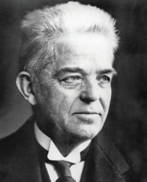
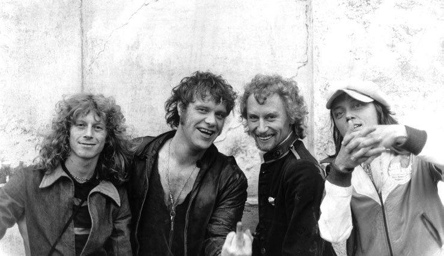
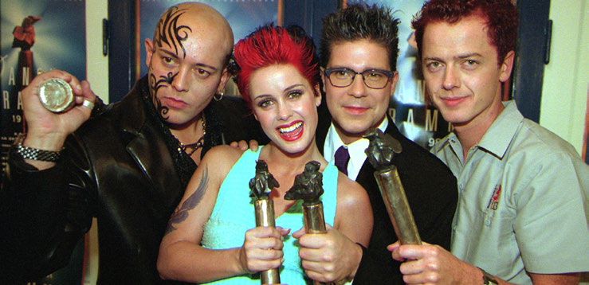

5.4 – MUSIK
sidde 158
De mange store horn, der er bevaret fra bronzealderen (1700-500 før Kristus), tyder på, at musik har været kendt i Danmark i flere tusinde år. Man ved dog ikke med sikkerhed, hvad de smukke såkaldte ”lurer” har været brugt til. De er fundet parvis, og eftertiden har forsøgt at spille på dem, men hvordan det skal gøres, vides ikke med sikkerhed. I det hele taget er oplysningerne om musikken før kristendommens indførelse i 900-tallet meget sparsomme.
Med kristendommen kom den katolske kirkemusik til Danmark, og efter refor mationen i 1536 blev salmesangen, hvor menigheden skulle synge med, en vigtig del af gudstjenesten. Reformationen er derfor også blevet kaldt den syngende revolution, og riget blev samlet om salmebøger, som var autoriseret af kongen, og som alle skulle bruge – den første udkom i 1569.
Thomas Kingo (1634-1703), Hans Adolph Brorson (1694-1764), Nikolaj Severin Frederik Grundtvig (1783-1872) og Bernhard Severin Ingemann (1789-1862) er de vigtigste salmedigtere. Deres værker spænder fra salmer med en stærk bevidsthed om, at livet ikke er evigt (Kingo) og en dyrkelse af en inderlig og følel sesfuld tro (Brorson) til salmer, der hylder naturen, barnet og livet på jord som en del af Guds skaberværk (Grundtvig og Ingemann).
I slutningen af 1700-tallet og begyndelsen af 1800-tallet indvandrede flere tyske musikere og komponister til Danmark og fornyede musikken. Friedrich Kuhlau (1786-1832) skrev musik til det nationalromantiske festspil Elverhøi (1828), hvor musikken til digteren Johannes Ewalds (1743-81) ”Kong Christian stod ved højen mast” (1778/79), den ene af Danmarks to nationalsange og Danmarks kongesang, indgår. Teksten til ”Kong Christian stod ved højen mast” er skrevet i 1778/79 af Johannes Ewald (1743-81). Danmark har som et af de eneste lande i verden to nationalsange. Den anden national sang er ’Der er et yndigt land’, som Adam Oehlenschläger skrev teksten til i 1819, hvortil Hans Ernst Krøyer (1798-1879) komponerede musikken i 1835.
En af Højskolesangbogens mest kendte komponister er Carl Nielsen (18651931), der havde rod i et folkeligt musikliv på Fyn.
Han blev med sine operaer, symfonier, kammermusik og sange den mest fremtrædende danske komponist nogensinde.Komponisten, Carl Nielsen. Komponisten, Carl Nielsen.
Læremateriale Til Indfødsretsprøven

sidde 159
Hans musik tog afsæt i 1800-tallets romantiske stil, men han fik forenet det folkelige og det moderne, og han arbejdede både med enkel og meget kompli ceret musik. Carl Nielsen var gift med billedhuggeren Anne Marie Carl-Nielsen.
Dansk jazzmusik har talt fremragende musikere, kapelmestre og komponi ster fra Leo Mathisen (1906-69) til Palle Mikkelborg (født 1941) og den danskamerikanske Marilyn Mazur (født 1955). I 1960’erne var København hjemsted for en række amerikanske jazzmusikere: eksempelvis Stan Getz, der søgte et kunstnerisk fristed i Danmark i en periode, hvor USA var præget af uroligheder og raceforfølgelse.
I det 20. og 21. århundrede har rock- og popmusikken haft et meget stort publikum. Mange forskellige strømninger gør sig gældende, og komponisten Bent Fabricius Bjerre (1924-2020) blev kendt for at skrive stribevis af melo dier til film og tv-serier som eksempelvis Matador. Blandt de vigtigste bands og musikere er Gasolin, Anne Linnet og TV2. Gasolin med forsangeren Kim Larsen (1945-2018) kombinerede pop og rock og bidrog til den danske sangskat med sange som ”Kvinde min” (1975) og ”Hva’ gør vi nu, lille du?” (1976). Kim Larsen fik en lang karriere som sanger og sangskriver, og mange af hans sange bliver brugt ved familiefester, fordi han kan udtrykke følelser, humor og solidaritet på en enkel og underfundig måde.Gasolin, dansk rockgruppe i 1970’erne. Foto: Ritz
Gasolin, dansk rockgruppe i 1970’erne. Foto: Ritzau Scanpix.
Anne Linnets sang ”Smuk og dejlig” (1976) handler om lesbisk kærlighed, og bandet TV2 fra Aarhus, der selvironisk kaldte sig selv ”Danmarks kedeligste orkester”, synger om blandt andet hverdagen, kærligheden og om vigtigheden af at turde leve livet og gribe dets muligheder. Blandt TV2’s mest kendte numre er ”Nærmest lykkelig”. I 1990’erne havde den dansk-norske musikgruppe Aqua stor succes med deres dansepop, hvor særligt nummeret ”Barbie Girl” var et globalt hit. Aqua udgav to albums i deres storhedstid, og med omkring 28 millioner solgte cd’er er det en af de mest sælgende danske musikgrupper nogensinde.
Læremateriale Til Indfødsretsprøven

sidde 160
Musikgruppen Aqua i 1998. Foto: Nils Meilvang/Ritzau Scanpix
Musikgruppen Aqua i 1998. Foto: Nils Meilvang/Ritzau Scanpix.
I de senere år har særligt gruppen Lukas Graham med forsangeren Lukas Forchhammer (født 1988) i spidsen haft stor succes i både Danmark og interna tionalt. Gruppen udgav sit første album i 2012, og nummeret ”7 Years” er et af de mest indtjenende danske numre i 2010’erne. Og Karen Marie Ørsted (født 1988), som er kendt under kunstnernavnet MØ, slog igennem med singlen ’Pilgrim’ i 2013 og har siden blandt andet udgivet ’Kamikaze’ og ’Final Song’. Sammen med det amerikanske band Major Lazer og den canadiske sanger Justin Bieber udgav hun desuden i 2016 singlen ”Cold Water”, som blev et stort internationalt hit.
Danmark har vundet Eurovision Song Contest (Det Europæiske Melodi Grand Prix) tre gange. Første gang var i 1963 med ”Dansevise”, som blev fremført af Grethe Ingmann (1938-90) og Jørgen Ingmann (1925-2015). Anden gang i år 2000 med ”Smuk som et stjerneskud/Fly on the Wings of Love”, skrevet og frem ført af duoen Brødrene Olsen, der består af Jørgen Olsen (født 1950) og Niels Olsen (født 1954). Tredje gang var 2013 med ”Only Teardrops ”, som blev sunget af Emmelie de Forest (født 1993).Emmelie de Forest, vinder af Det Europæiske Melodi Grand Prix 2013. Foto: Keld N
Emmelie de Forest, vinder af Det Europæiske Melodi Grand Prix 2013. Foto: Keld Navntoft/Ritzau Scanpix.
Læremateriale Til Indfødsretsprøven

Fonte: Læremateriale til Indfødsretsprøven, SIRI.